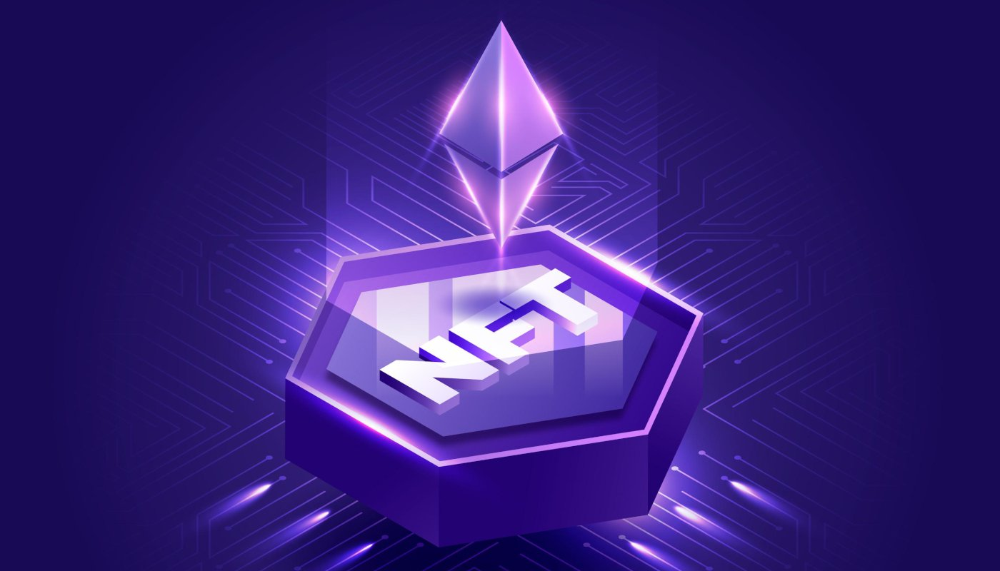

Ce sunt NFT-urile?
Un jeton nefungibil (NFT) este un tip specializat de jeton criptografic care reprezintă ceva unic, cum ar fi un nume de domeniu, un skin pe timp limitat pentru un joc video sau alte proprietăți digitale deținute de un utilizator. Prin urmare, NFT-urile nu sunt interschimbabile reciproc, ceea ce înseamnă că o persoană poate tranzacționa dreptul de proprietate asupra unui nume de domeniu pentru proprietatea unui skin de caractere rare sau a unei criptomonede. NFT-urile diferă de criptomoneda; NFT-urile sunt complet nefungibile și nu pot fi tranzacționate pentru ceva identic. Criptomoneda este fungibilă și este schimbată cu ceva de valoare egală sau identică.
Intrebuintarile NFT-urilor
NFT-urile sunt folosite pentru a crea proprietate digitală și deficit. Ei dezvoltă o posibilitate de interoperabilitate pe mai multe platforme prin blockchain, care acționează ca strat de management al NFT. Blockchain permite schimbul unui articol de la o parte la alta și permite afișarea NFT-urilor în diferite piețe în stil eBay. NFT-urile sunt folosite în aplicații specifice pentru a achiziționa obiecte digitale unice sau rare, cum ar fi cripto-artă, cripto-colecție și cripto-gaming.
Domeniile in care sunt folosite NFT-urile
Arta Digitala
De departe, una dintre cele mai asociate utilizări pentru NFT este în arta digitală. NFT-urile pot fi folosite pentru a realiza articole de artă digitală unice, cu proprietăți unice și exclusive. Crearea unui NFT pentru a reprezenta arta permite unui artist să ofere consumatorului dovada că fișierul de artă bazat pe NFT este singurul care există. Acest lucru oferă artei NFT un nivel de raritate și unicitate datorită imuabilității blockchain-ului și le permite artiștilor să obțină o reducere din vânzarea secundară a artei digitale, deoarece acest tip de redevență secundară poate fi programată ca cod în NFT pentru a trimite înapoi un procent. artistului original.
Gaming
Industria jocurilor de noroc va beneficia de NFT, deoarece acestea pot fi folosite pentru a crea articole neduplicabile, în joc, pentru a oferi jucătorilor o formă de proprietate similară cu „skins” și „lootbox” de caractere, dar cu accent pe unul dintre- unul, care ar putea determina jucătorii să colecteze. Acest lucru s-a făcut deja în unele jocuri, cum ar fi Axie Infinity, în care utilizatorii creează mici creaturi ca NFT care pot fi vândute pe o piață în joc. În alte jocuri, acest lucru ar putea vedea jucătorii să câștige monede nefungibile, virtuale, în joc, care ar putea fi folosite pentru a face achiziții în joc, cum ar fi obiecte și utilizări NFT sau, în unele cazuri sugerate, pot fi chiar folosite pentru a „încasa bani”. out” sau tranzacționați pe o criptomonedă sau pe piața din joc.
Moda si vestimentatie
Brandurile de îmbrăcăminte de lux au început să intre în spațiul NFT. Aceasta a inclus bunuri fizice, cum ar fi îmbrăcămintea de vânzare cu amănuntul și accesoriile aferente, cu însoțitori digitali, cum ar fi NFT-uri, care sunt capabile să îmbine lumea reală cu tehnologia lumii digitale și, odată cu utilizarea sporită a realității augmentate cu couture fizice, ar putea oferi un nou mod de a experimenta hainele cu îmbrăcăminte digitală. Și în aplicațiile online sau „metaverse”, un NFT de îmbrăcăminte ar putea fi folosit similar cu o piele de personaj în jocuri.
Venit pasiv
Într-un scenariu de finanțare descentralizată (DeFi), NFT-urile pot oferi și beneficii financiare, deoarece valoarea lor poate fi derivată din utilitatea lor. De exemplu, JustLiquidity a creat un model de miza NFT, în care un utilizator poate miza o pereche de jetoane într-un pool pentru o anumită perioadă și poate primi un NFT pentru a accesa următorul pool, ceea ce creează o piață secundară pentru aceste NFT bazate pe asupra accesului pe care îl oferă. În mod similar, combinațiile alimentare NFT ale BakerySwap oferă recompense sporite de miză pentru exploatații. Prin contribuție, utilizatorii primesc un NFT care oferă o cantitate variabilă de putere de miză care poate fi vândută pe piața secundară.
Proprietate imobiliara
În industria imobiliară, există potențialul ca terenul sau proprietatea fizică să fie reprezentate pe un blockchain ca NFT. Aceasta înseamnă că un token digital poate avea tot felul de atribute, cum ar fi locația, prețul și măsurarea, care din cauza blockchain-ului, ar fi imposibil de manipulat. În plus, acest lucru ar putea permite proprietarilor sau proprietarilor de proprietăți să-și fragmenteze proprietatea asupra unei anumite proprietăți pentru a vinde părți, fie pentru capital pe termen scurt, fie pentru a permite membrilor unui apartament sau condominiu să dețină o parte a clădirii și să voteze asupra schimbări în clădirea ca comunitate. Acest lucru ar putea fi folosit și pentru a vinde bunuri imobiliare digitale, în special în realitate virtuală sau metavers.